6．波动方程和退化波动方程
偏微分方程的最重要的类型也许是波动方程了。在三维空间中，其基本形式是
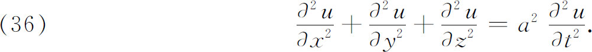
就我们所知，这方程在18世纪就已经引入了，并且也已用球坐标表示出来。19世纪时波动方程的新用途被发现了，特别是在萌芽时期的弹性领域。各种形状的固体在不同的初始条件和边界条件下的振动以及波在弹性体中的传播产生一大堆问题。进一步研究声和光的传播引起成百个附加问题。
在变量可分离的场合，解（36）的技巧与傅里叶解热方程和拉梅用某一曲线坐标系表示位势方程后所做的没有差别。马蒂厄用曲线坐标经变量分离而求解波动方程是成百篇论文中的典型。
处理波动方程的另一类完全不同的重要结果是把方程作为整体对待而得到的。第一个这样的主要结果是论述初值问题的，这要追溯到泊松，他在1808年到1819年期间研究过这个方程。他的主要成就(23)是一个关于波u（x，y，z，t）传播的公式，其初始状态由初始条件
描述，而波u满足偏微分方程
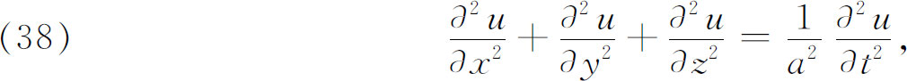
其中a是常数。其解u由下式给出：
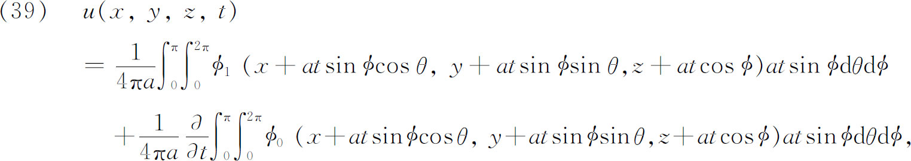
其中θ与ø是普通的球坐标。积分区域是以具有坐标x，y，z的点P为中心，以at为半径的球Sat的表面。
泊松的结果意味着什么，为了得到这方面的某些启示，让我们来考虑一个物理例子。假如初始扰动是由边界为S的物体V（图28.2）发出，使得ø0与ø1定义在V上并在V外为0。我们说这初始扰动在V上被局部化了。从物理上看是一个波从V发出并向空间扩展出去。泊松的公式告诉我们在V外任一点P（x，y，z）处发生些什么事情。令d与D表示P到V上的点的最小与最大距离。当t＜d/a时，（39）中的积分为零，因为积分区域是中心在P、半径为at的球Sat的表面。因为ø0与ø1在Sat上是0，于是函数u在P处是0。这意味着从S扩展出来的波还没有达到P。在t＝d/a时，球Sat刚刚接触到S，因此从S发出的波的波前到达P。当t在t＝d/a和t＝D/a之间时，球Sat交割V，所以u（P，t）≠0。最后对t＞D/a，球Sat将不与S相交（整个区域V属于Sat的内部），即是说，初始扰动已经通过了P。所以又有u（P，t）＝0。时刻t＝D/a相应于波的尾缘通过P。在任何给定的时刻t，波的前缘呈曲面形状，把扰动已到达的点和尚未到达的点分开。这个前缘是中心在S、半径为at的一族球面的包络。在时刻t，波的后缘是一个曲面，把还存在有扰动的点与扰动已经过去的点分开。于是我们看到，在空间局部化了的扰动在每一点P引起的效果仅仅持续有限时间。此外这波（扰动）还有前缘和后缘。这整个现象叫做惠更斯原理。
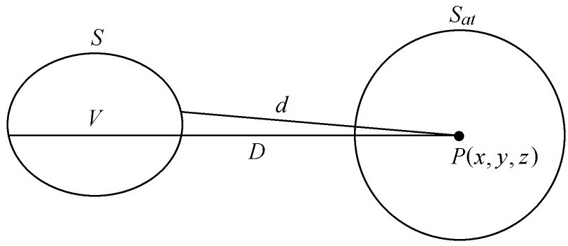
图29.2
解波动方程初值问题的一个完全不同的方法是黎曼在研究有限振幅声波传播的过程中创立的(24)。他考虑可写为如下形状的二阶线性微分方程：
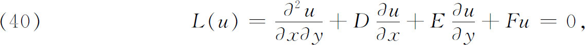
其中D，E，F是x和y的二阶可微的连续函数。问题是在知道了沿曲线Γ的u和
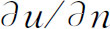
（意即知道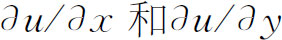
）时，去求出在任意点P处的u（图28.3），他的方法依赖于找一个函数v（叫黎曼函数或特征函数）(25)，使其满足现今所称的共轭方程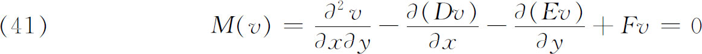
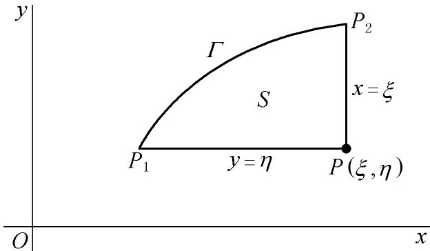
图28.3
和其他一些我们即将详细说明的条件。
黎曼引入通过P的特征（他没有用这个名词）、x＝ξ和y＝η的线段PP1和PP2。现在把广义格林定理（二维情形）应用于微分表示式L（u）。为了简明地表示这定理，我们引进
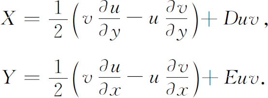
于是格林定理说
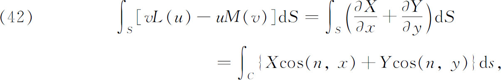
其中S是图中的区域，C是S的整个边界，cos（n，x）是C的法线方向和x轴间夹角的余弦。
除了满足（41），黎曼对v还要求
（a）v＝1 在P处，
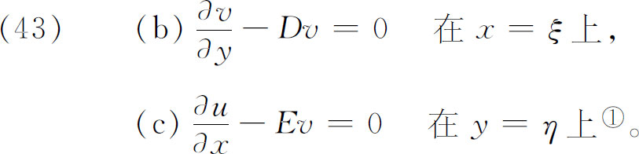
对二维问题，v是四个变量ξ，η，x和y的函数。作为x，y的函数，它满足方程M（v）＝0。
使用条件M（v）＝0与条件（43），并算出C上的曲线积分，黎曼得到
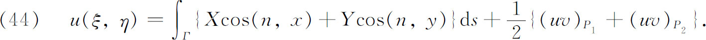
这样，在任意点P处u的值就用u，
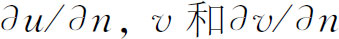
在Γ上的值及u和v在P1与P2处的值给出来了。现在u在P1与P2已给出。函数v本身必须从求解M（v）＝0得出并满足条件（43）。黎曼方法取得的成就在于把原来关于u的初值问题变成关于v的另一类初值问题。而第二个问题通常较容易求解。在黎曼的物理问题中，找出v来特别容易。然而这样的v的存在性一般说来不是由黎曼证明的。
刚才所述的黎曼方法仅对以二元波动方程（双曲方程）作为例子的那类方程有用，而不能直接推广。把这个方法推广到多于两个独立变量时，遇到了黎曼函数在积分区域边界上变为奇异从而使积分发散的困难。这方法已经被推广，但以增加复杂性为代价。
用其他方法解波动方程的进展是与所谓稳态问题密切联系的，它导致简化的波动方程。波动方程就其形式本身来说，是包含时间变量的。在许多物理问题里，如果人们感兴趣的是简单谐波，就假设
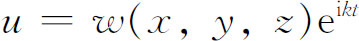
，把它代入波动方程就得到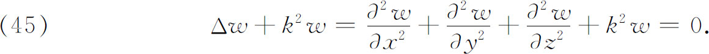
这就是退化波动方程或亥姆霍兹方程。方程
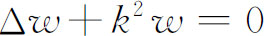
表示所有调和的、声音的、弹性的、电磁学的波。正当较老的作者满足于寻找特殊积分的时候，亥姆霍兹（1821—1894）在他论一端开放的管道内（风琴管）空气振动的著作里，给出了关于这个方程的解的第一个普遍的研究(26)。他关注传音的问题，其中w是一个作谐振动的气体的速度势，k是由空气弹性和振动频率确定的常数，λ是波长，等于2π/k。应用格林定理，他证明了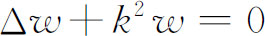
的任一个在给定区域内连续的解可以表示为区域表面上激发点的单层和双层效应。把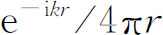
作为格林定理中的一个函数，他得到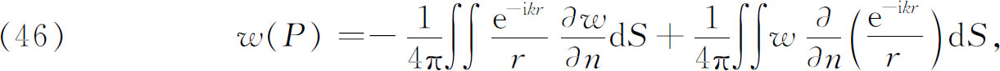
其中r表示P到边界上变动点的距离。这样，在求解区域内任一点P处的w就由w与
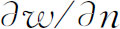
在边界S上的值给出。19世纪伟大的德国数学物理学者之一，基尔霍夫（Gustav R．Kirchhoff，1824—1887）使用亥姆霍兹的工作求得了波动方程初值问题的另一个解。假定Δw＋k2w＝0是得自
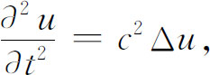
其中已令u＝weiσt以使k＝σ/c。于是（46）可写为
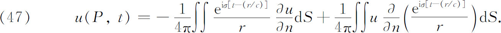
这个公式被基尔霍夫推广了。如果令ø（t）是u在时刻τ时边界上任一点（x，y，z）处的值，并令f（τ）是
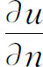
相应的值，则基尔霍夫证明了(27)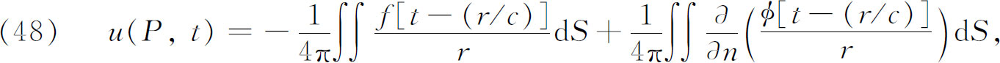
其中假定在最后一项中关于n的微分仅在r明显出现于分子分母两者时才应用于r。这样，在P处的u就用u与
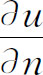
在较早时刻、在围绕P点的闭曲面上的值表示出。这结果叫做声学的惠更斯原理，是泊松公式的推广。我们已经注意到黎曼用了稍较广义的格林定理。用到共轭微分方程的格林定理的完全推广也称为格林定理，来源于杜波依斯雷蒙（Paul Du Bois-Reymond，1831—1889）的一篇论文(28)和达布的书《曲面的一般理论》（Théorie générale des surfaces）(29)；两者都引用了黎曼1858年或1859年的论文。如果给定的方程是
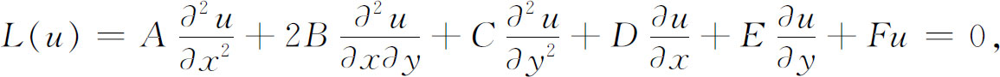
其中系数都是x与y的函数。在u，v与其一阶、二阶导数都连续的假定下，在x-y平面的任意区域R上积分乘积vL（u）。于是由分部积分就得到广义的格林定理：
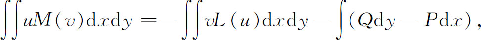
其中重积分展布于R的内部，单积分展布于R的边界上，并且
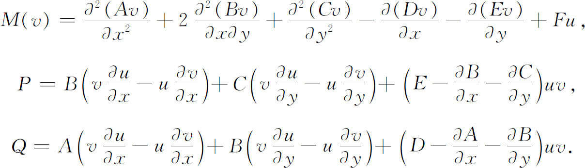
M（v）是L（u）的共轭表达式，M（v）＝0是共轭微分方程。反之，L（u）是M（v）的共轭。
格林定理的重要性在于它能用于求得某些偏微分方程的解。例如，因为椭圆型方程总能够写成
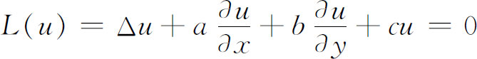
的形式，于是
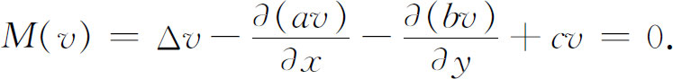
令v是共轭方程的一个解，它在任意点（ξ，η）像对数那样变成无穷；就是说，它的性态相同于
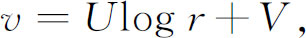
其中r是从（ξ，η）到（x，y）的距离，U与V在所考虑的区域R内是连续的，并且U是标准化了的，因而U（ξ，η）＝1。现在把（ξ，η）包围在一个圆内，把它从积分区域中剔出来。于是，当此圆收缩到（ξ，η）时，由广义格林定理给出
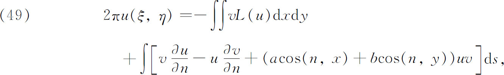
其中的n如果指向区域外部就是正的，单积分按反时针方向展布在边界上。因为u满足L（u）＝0；如果我们知道v，并且在边界上u与
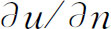
已给出（两者都不是任意的），那么我们就把u表示成了单积分。函数v叫做格林函数。然而常常把v在R的边界上为0的条件附加到格林函数的定义中去。格林定理的这个用法已发展到各种特殊情形和各种推广。